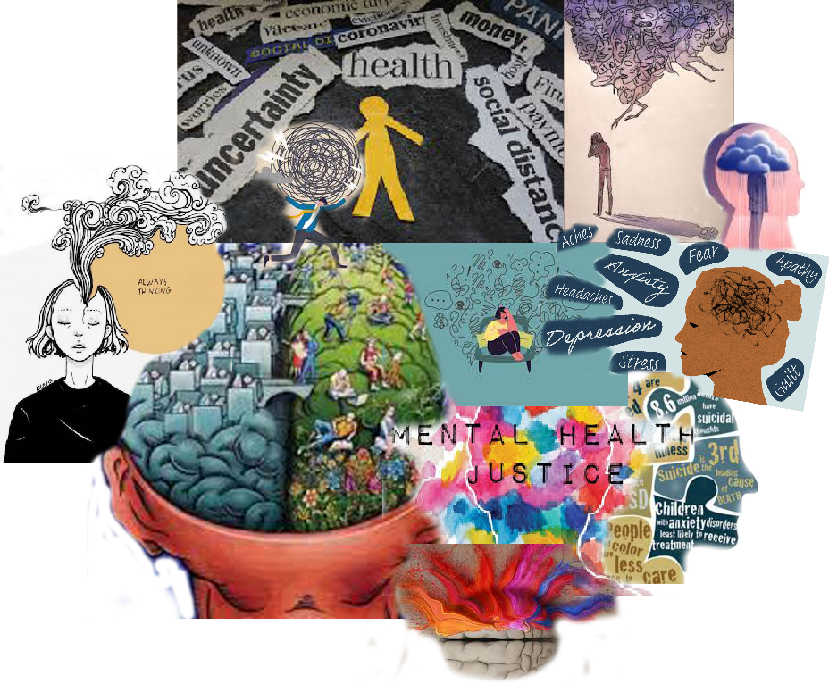

This is my website!
I started by creating my character, I brainstormed how I wanted my character to look. My character looks like a motocross player. She is wearing her motorcycle helmet and gear and is on a dirtbike. My character would most likely be in a racing game anywhere where she can show off her motor skills. Their purpose in the game is to show how a girl can be just as good as a boy “in their own sport” (basically a girl can beat a boy, in a boys sport).

I started by finding pictures that described me. Some pictures I used were my own, that I thought should be in my collage because of the comfort the photos give me. I included an inspirational picture in my collage because it’s my daily affirmation. These pictures all have a deeper meaning to me and explains how I am as a person. I think my collage matched my aesthetic because it's so simple with so much meaning, which is something I go for all the time.

I went to image, adjustments,gradients maps so that i can change the color on the color bar. I used dark colors for my face and light colors for the background.For this project I chose a selfie that I had already taken on the computer because I couldn't decide on which celebrity to choose from. The picture gives a chill/ calm presence of myself.

For the animal I created I thought about which animal body part will fit perfectly into one. So I used a wolf's face, a cheetah's body, and eagle wings. My animal has the ability to fly, run (speed ) and the ability to sense(5 senses). Putting these body placements the way i did made the hybrid animal look more powerful and strong because I used the best part of each of the animals and created it into one.
My social justice impact was mental health. I chose mental health because I noticed how over time Mental health illnesses have only expanded. This is important to me because this was something I've witnessed first hand. When someone looks at this collage, I would like them to know that this is an ongoing issue that is not addressed as often as it should be. Assembled these photos by selecting photos I thought described mental health the best, then I combined the photos and made a collage